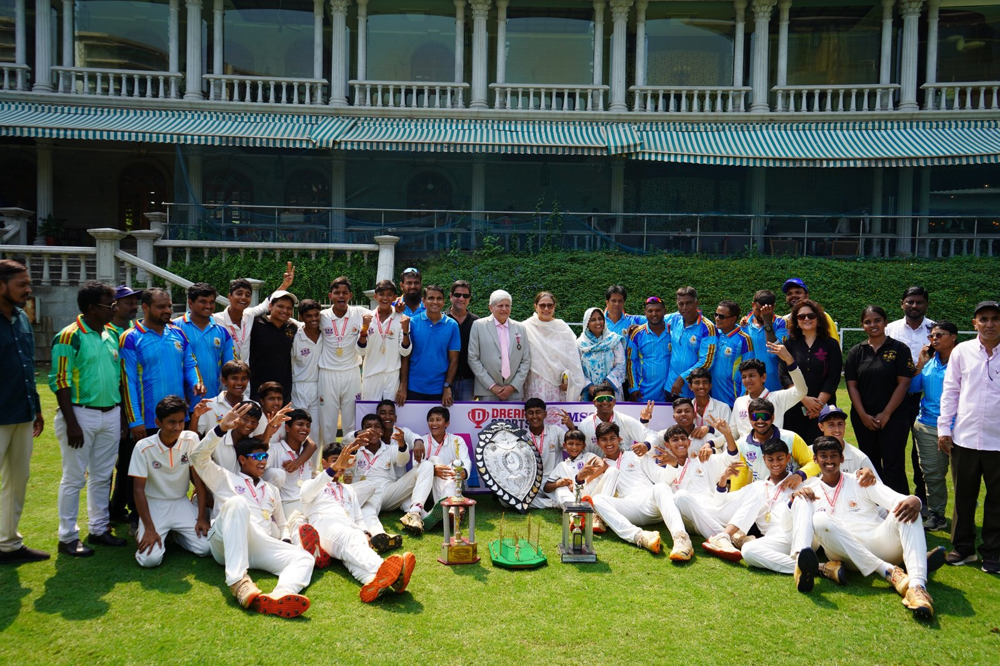

Academics
Rigorous learning, personal support
Advisors, peer tutors and data-driven monitoring from Primary through Jr. College.
Admissions open · Boarding school & Jr. College
A residential school on 174 acres in the hills of Panchgani — robotics, aviation, agriculture and NEET / JEE coaching, grounded in over a century of values and part of Anjuman-I-Islam since 1874.
Programmes & experiences
Advisors, peer tutors and data-driven monitoring from Primary through Jr. College.
A tinkering lab for hands-on building.
Look up — then learn to fly.
On-campus riding, archery and shooting ranges.
Organic gardens and rainwater harvesting.
Entrance coaching on campus.
Part of something bigger
Founded in 1874, Anjuman-I-Islam reaches over a hundred thousand learners every year across Maharashtra.
Welcome
“Step into a world where education meets compassion, and learning goes beyond the books. A place where lifelong friendship begins and the future is bright.”Executive Chairman
A transformative education beyond the classroom: a holistic environment that nurtures intellectual curiosity, creativity and personal growth, preparing students for success in higher education and beyond.
Our storyResults
Published 2026 board results across the Anjuman-I-Islam network, plus entrance-exam tracks at Panchgani.
Placeholder figures — replace with verified Panchgani results.
Board results are network-wide figures published by Anjuman-I-Islam (2026).
Legacy
From Mr. Cumruddin Tyabji (1875) to Dr. Zahir Kazi today.
Drag to explore · ★ philanthropist presidents.
Life at Panchgani
Prayer hall, Quran recitation and breakfast.
Digital classrooms, labs and practicals.
Dietician-planned meals in the dining hall.
Sports, arts, robotics, riding, archery.
Peer tutors and the dorm in-charge.
From the Anjuman family

Admissions